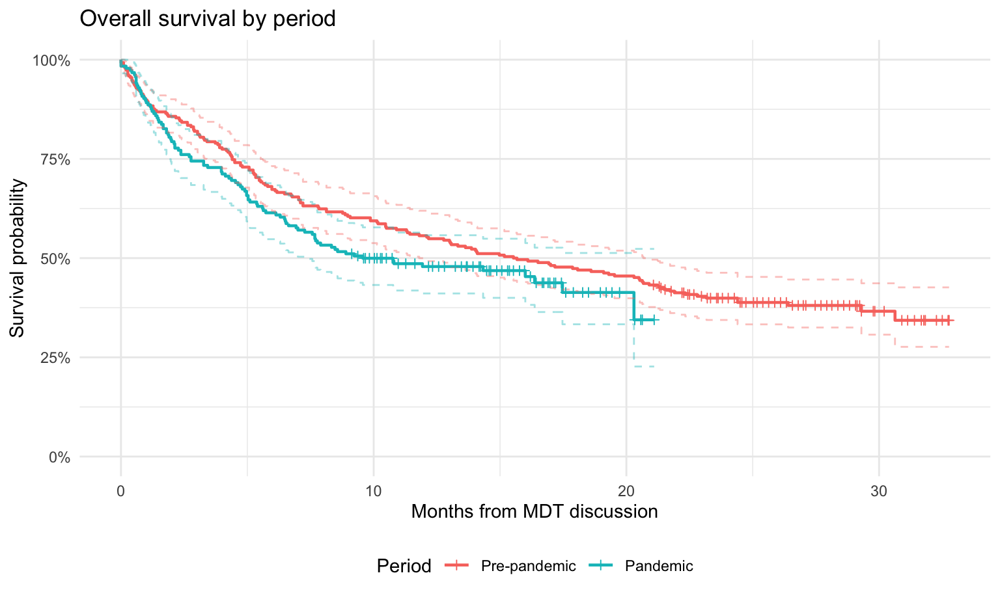
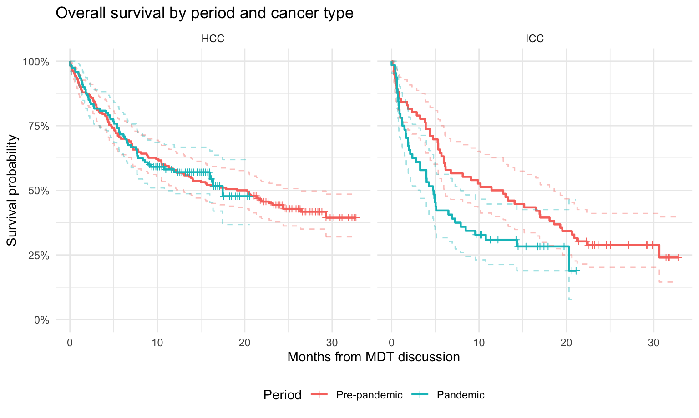
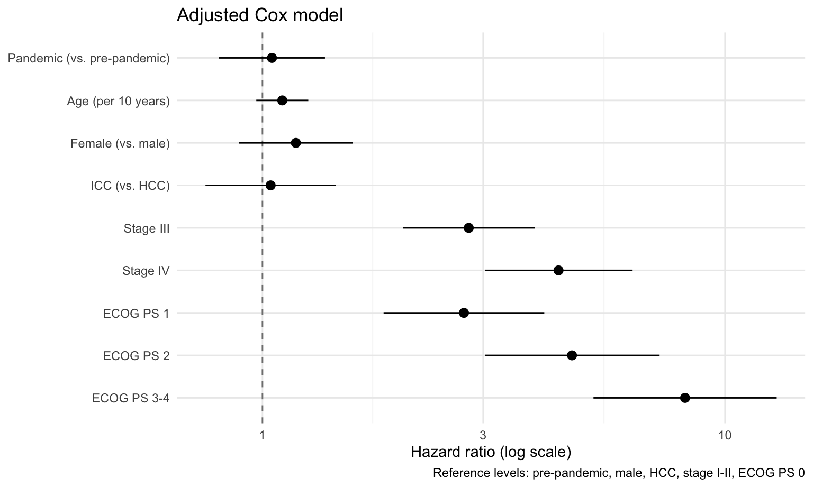
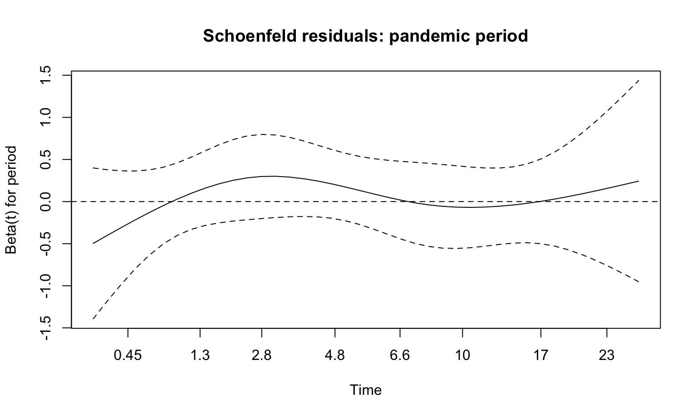

We use the cleaned data from the Data page.
Survival time is measured in months from the MDT discussion, and
event = 1 means the patient died.
For modeling, we group ECOG performance status 3 and 4 together (only 5 patients have PS 4), and we combine TNM stages I and II, since very few ICC patients were diagnosed at stage I.
liver_df =
read_rds("data/liver_clean.rds") |>
mutate(
age_10 = age / 10,
ps_group = fct_collapse(
factor(ps),
"0" = "0", "1" = "1", "2" = "2", "3-4" = c("3", "4")
),
stage_group = fct_collapse(
tnm_stage,
"I-II" = c("I", "II"), "III" = "III", "IV" = "IV"
)
)liver_df |>
group_by(period, cancer_type) |>
summarize(
patients = n(),
deaths = sum(event),
max_follow_up = max(survival_months),
.groups = "drop"
) |>
knitr::kable(
digits = 1,
col.names = c("Period", "Cancer", "Patients", "Deaths", "Max follow-up (months)")
)| Period | Cancer | Patients | Deaths | Max follow-up (months) |
|---|---|---|---|---|
| Pre-pandemic | HCC | 190 | 109 | 32.7 |
| Pre-pandemic | ICC | 76 | 55 | 32.8 |
| Pandemic | HCC | 120 | 54 | 20.6 |
| Pandemic | ICC | 64 | 46 | 21.1 |
The pre-pandemic cohort was referred a year earlier, so it can have longer follow-up. Below we use the reverse Kaplan–Meier method to estimate median potential follow-up in each period. To make the comparison fairer, the sensitivity analysis restricts both cohorts to the first 12 months.
reverse_km = survfit(Surv(survival_months, 1 - event) ~ period, data = liver_df)
as_tibble(summary(reverse_km)$table, rownames = "period") |>
mutate(period = str_remove(period, "^period=")) |>
select(period, median, `0.95LCL`, `0.95UCL`) |>
knitr::kable(
digits = 1,
col.names = c("Period", "Median follow-up (months)", "Lower 95% CI", "Upper 95% CI")
)| Period | Median follow-up (months) | Lower 95% CI | Upper 95% CI |
|---|---|---|---|
| Pre-pandemic | 26.6 | 25.4 | 28.1 |
| Pandemic | 14.6 | 13.7 | 15.8 |
# turn a survfit object into a tidy data frame that starts at time 0
km_tidy = function(fit) {
tidy(fit) |>
mutate(strata = fct_inorder(str_remove(strata, "^[^=]+="))) |>
group_by(strata) |>
group_modify(\(df, key) {
add_row(df, time = 0, estimate = 1, conf.low = 1, conf.high = 1, n.censor = 0, .before = 1)
}) |>
ungroup()
}
km_plot = function(km_df) {
km_df |>
ggplot(aes(x = time, y = estimate, color = strata)) +
geom_step(linewidth = 0.8) +
geom_step(aes(y = conf.low), linetype = "dashed", alpha = 0.4) +
geom_step(aes(y = conf.high), linetype = "dashed", alpha = 0.4) +
geom_point(data = filter(km_df, n.censor > 0), shape = 3, size = 1.5) +
scale_y_continuous(limits = c(0, 1), labels = scales::percent) +
labs(
x = "Months from MDT discussion",
y = "Survival probability",
color = "Period"
)
}km_fit = survfit(Surv(survival_months, event) ~ period, data = liver_df)
km_tidy(km_fit) |>
km_plot() +
labs(title = "Overall survival by period")
logrank = survdiff(Surv(survival_months, event) ~ period, data = liver_df)
logrank_p = pchisq(logrank$chisq, df = length(logrank$n) - 1, lower.tail = FALSE)Log-rank test comparing the two periods: p = 0.147.
Median and 1-year survival:
median_tbl =
as_tibble(summary(km_fit)$table, rownames = "period") |>
mutate(period = str_remove(period, "^period=")) |>
select(period, median, `0.95LCL`, `0.95UCL`)
km_12 = summary(km_fit, times = 12)
one_year_tbl =
tibble(
period = str_remove(km_12$strata, "^period="),
surv_12 = km_12$surv,
surv_12_low = km_12$lower,
surv_12_high = km_12$upper
)
left_join(median_tbl, one_year_tbl, by = "period") |>
knitr::kable(
digits = 2,
col.names = c(
"Period", "Median survival (months)", "Lower 95% CI", "Upper 95% CI",
"1-year survival", "Lower 95% CI", "Upper 95% CI"
)
)| Period | Median survival (months) | Lower 95% CI | Upper 95% CI | 1-year survival | Lower 95% CI | Upper 95% CI |
|---|---|---|---|---|---|---|
| Pre-pandemic | 15.60 | 11.80 | 20.67 | 0.56 | 0.50 | 0.62 |
| Pandemic | 9.57 | 7.27 | NR | 0.48 | 0.41 | 0.56 |
NR = not reached: too few pandemic patients were followed long enough for the upper confidence limit of the median to be estimated.
HCC and ICC have very different prognoses, so we also compare the two periods within each cancer type.
km_by_type =
liver_df |>
nest(data = -cancer_type) |>
mutate(
fit = map(data, \(df) survfit(Surv(survival_months, event) ~ period, data = df)),
logrank = map(data, \(df) survdiff(Surv(survival_months, event) ~ period, data = df)),
p_value = map_dbl(logrank, \(x) pchisq(x$chisq, df = 1, lower.tail = FALSE)),
km = map(fit, km_tidy)
)
km_by_type |>
select(cancer_type, km) |>
unnest(km) |>
km_plot() +
facet_wrap(~ cancer_type) +
labs(title = "Overall survival by period and cancer type")
km_by_type |>
select(cancer_type, p_value) |>
arrange(cancer_type) |>
mutate(p_value = fmt_p(p_value)) |>
knitr::kable(col.names = c("Cancer", "Log-rank p-value"))| Cancer | Log-rank p-value |
|---|---|
| HCC | 0.961 |
| ICC | 0.028 |
The main exposure is the pandemic period, with pre-pandemic as the reference. The adjusted model controls for age, sex, cancer type, stage and performance status. We do not adjust for treatment, because changes in treatment may be one of the ways the pandemic affected survival (a mediator rather than a confounder). Patients with missing stage or performance status are excluded from the adjusted model.
cox_unadj = coxph(Surv(survival_months, event) ~ period, data = liver_df)
cox_adj = coxph(
Surv(survival_months, event) ~ period + age_10 + sex + cancer_type + stage_group + ps_group,
data = liver_df
)
tidy_hr = function(model) {
tidy(model, exponentiate = TRUE, conf.int = TRUE)
}
pretty_terms = function(term) {
term |>
str_replace("^periodPandemic$", "Pandemic (vs. pre-pandemic)") |>
str_replace("^age_10$", "Age (per 10 years)") |>
str_replace("^sexFemale$", "Female (vs. male)") |>
str_replace("^cancer_typeICC$", "ICC (vs. HCC)") |>
str_replace("^stage_group", "Stage ") |>
str_replace("^ps_group", "ECOG PS ")
}
# pandemic hazard ratio as inline text, e.g. "HR 1.05, 95% CI 0.81–1.37"
hr_text = function(model) {
hr = tidy_hr(model) |> filter(term == "periodPandemic")
sprintf("HR %.2f, 95%% CI %.2f–%.2f", hr$estimate, hr$conf.low, hr$conf.high)
}Hazard ratio for the pandemic period:
bind_rows(
Unadjusted = tidy_hr(cox_unadj),
Adjusted = tidy_hr(cox_adj),
.id = "model"
) |>
filter(term == "periodPandemic") |>
select(model, estimate, conf.low, conf.high, p.value) |>
mutate(p.value = fmt_p(p.value)) |>
knitr::kable(
digits = 3,
col.names = c("Model", "Hazard ratio", "Lower 95% CI", "Upper 95% CI", "p-value")
)| Model | Hazard ratio | Lower 95% CI | Upper 95% CI | p-value |
|---|---|---|---|---|
| Unadjusted | 1.210 | 0.935 | 1.566 | 0.148 |
| Adjusted | 1.048 | 0.805 | 1.365 | 0.726 |
The adjusted model includes 447 of 450 patients (262 deaths); three patients are missing stage or performance status.
The unadjusted hazard ratio moves toward 1 after adjustment. This is mainly because the pandemic cohort was diagnosed at a later stage, especially for ICC:
liver_df |>
filter(!is.na(stage_group)) |>
count(cancer_type, period, stage_group) |>
group_by(cancer_type, period) |>
mutate(pct = scales::percent(n / sum(n), accuracy = 1)) |>
ungroup() |>
mutate(cell = str_c(n, " (", pct, ")")) |>
select(cancer_type, period, stage_group, cell) |>
pivot_wider(names_from = stage_group, values_from = cell) |>
knitr::kable(col.names = c("Cancer", "Period", "Stage I-II", "Stage III", "Stage IV"))| Cancer | Period | Stage I-II | Stage III | Stage IV |
|---|---|---|---|---|
| HCC | Pre-pandemic | 114 (60%) | 51 (27%) | 25 (13%) |
| HCC | Pandemic | 70 (58%) | 35 (29%) | 15 (12%) |
| ICC | Pre-pandemic | 21 (28%) | 12 (16%) | 42 (56%) |
| ICC | Pandemic | 3 (5%) | 8 (12%) | 53 (83%) |
All terms in the adjusted model:
cox_adj_tbl =
tidy_hr(cox_adj) |>
mutate(term = pretty_terms(term))
cox_adj_tbl |>
select(term, estimate, conf.low, conf.high, p.value) |>
mutate(p.value = fmt_p(p.value)) |>
knitr::kable(
digits = 3,
col.names = c("Term", "Hazard ratio", "Lower 95% CI", "Upper 95% CI", "p-value")
)| Term | Hazard ratio | Lower 95% CI | Upper 95% CI | p-value |
|---|---|---|---|---|
| Pandemic (vs. pre-pandemic) | 1.048 | 0.805 | 1.365 | 0.726 |
| Age (per 10 years) | 1.104 | 0.970 | 1.256 | 0.135 |
| Female (vs. male) | 1.181 | 0.890 | 1.568 | 0.250 |
| ICC (vs. HCC) | 1.042 | 0.753 | 1.441 | 0.806 |
| Stage III | 2.792 | 2.012 | 3.876 | <0.001 |
| Stage IV | 4.365 | 3.027 | 6.296 | <0.001 |
| ECOG PS 1 | 2.726 | 1.828 | 4.067 | <0.001 |
| ECOG PS 2 | 4.668 | 3.026 | 7.202 | <0.001 |
| ECOG PS 3-4 | 8.197 | 5.195 | 12.932 | <0.001 |
cox_adj_tbl |>
mutate(term = fct_rev(fct_inorder(term))) |>
ggplot(aes(x = estimate, y = term)) +
geom_vline(xintercept = 1, linetype = "dashed", color = "grey50") +
geom_pointrange(aes(xmin = conf.low, xmax = conf.high)) +
scale_x_log10() +
labs(
x = "Hazard ratio (log scale)",
y = NULL,
title = "Adjusted Cox model",
caption = "Reference levels: pre-pandemic, male, HCC, stage I-II, ECOG PS 0"
)
These estimates are less precise, especially for ICC: only 3 pandemic ICC patients were diagnosed at stage I-II.
cox_by_type =
liver_df |>
nest(data = -cancer_type) |>
mutate(
model = map(data, \(df) {
coxph(
Surv(survival_months, event) ~ period + age_10 + sex + stage_group + ps_group,
data = df
)
}),
results = map(model, tidy_hr)
)
cox_by_type |>
select(cancer_type, results) |>
unnest(results) |>
filter(term == "periodPandemic") |>
arrange(cancer_type) |>
select(cancer_type, estimate, conf.low, conf.high, p.value) |>
mutate(p.value = fmt_p(p.value)) |>
knitr::kable(
digits = 3,
col.names = c("Cancer", "Hazard ratio (pandemic)", "Lower 95% CI", "Upper 95% CI", "p-value")
)| Cancer | Hazard ratio (pandemic) | Lower 95% CI | Upper 95% CI | p-value |
|---|---|---|---|---|
| HCC | 0.912 | 0.648 | 1.284 | 0.598 |
| ICC | 1.307 | 0.845 | 2.021 | 0.229 |
We check the proportional hazards assumption using Schoenfeld residuals. A small p-value suggests that the effect of a variable changes over time.
ph_test = cox.zph(cox_adj)
as_tibble(ph_test$table, rownames = "term") |>
mutate(
term = recode(
term,
period = "Period", age_10 = "Age", sex = "Sex", cancer_type = "Cancer type",
stage_group = "Stage", ps_group = "ECOG PS", GLOBAL = "Global test"
)
) |>
knitr::kable(digits = 3, col.names = c("Term", "Chi-square", "df", "p-value"))| Term | Chi-square | df | p-value |
|---|---|---|---|
| Period | 0.001 | 1 | 0.972 |
| Age | 0.097 | 1 | 0.755 |
| Sex | 0.022 | 1 | 0.881 |
| Cancer type | 0.392 | 1 | 0.531 |
| Stage | 3.844 | 2 | 0.146 |
| ECOG PS | 6.847 | 3 | 0.077 |
| Global test | 15.080 | 9 | 0.089 |
plot(ph_test[1], resid = FALSE, main = "Schoenfeld residuals: pandemic period")
abline(h = 0, lty = 2)
To make sure that differences in potential follow-up do not drive the results, we censor everyone at 12 months and refit the adjusted model.
liver_12 =
liver_df |>
mutate(
time_12 = pmin(survival_months, 12),
event_12 = if_else(survival_months <= 12, event, 0L)
)
cox_adj_12 = coxph(
Surv(time_12, event_12) ~ period + age_10 + sex + cancer_type + stage_group + ps_group,
data = liver_12
)
tidy_hr(cox_adj_12) |>
filter(term == "periodPandemic") |>
select(estimate, conf.low, conf.high, p.value) |>
mutate(p.value = fmt_p(p.value)) |>
knitr::kable(
digits = 3,
col.names = c("Hazard ratio (pandemic)", "Lower 95% CI", "Upper 95% CI", "p-value")
)| Hazard ratio (pandemic) | Lower 95% CI | Upper 95% CI | p-value |
|---|---|---|---|
| 1.07 | 0.811 | 1.412 | 0.634 |
Overall, these data suggest the pandemic affected liver cancer outcomes mainly through delayed, later-stage diagnosis rather than through worse survival among patients diagnosed at the same stage. The study is small and from a single centre, so the confidence intervals are wide and modest effects cannot be ruled out.